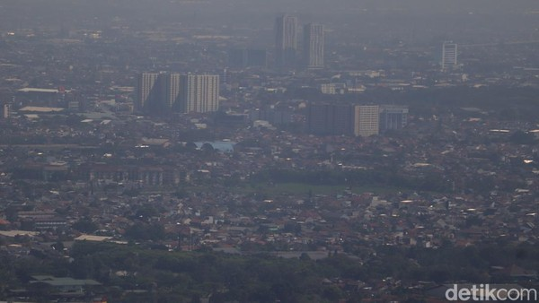

Polusi Bandung
Udara Kota Bandung sendiri, masuk dalam kategori kualitas sedang, tapi jika naik satu level lagi menyentuh angka kualitas tidak sehat. Menurut Kepala Seksi Pemantauan Lingkungan Hidup Dinas Lingkungan Hidup dan Kebersihan (DLHK) Kota Bandung, Iren Irma Muti, dalam sepekan ke belakang, tingkat polusi udara Kota Bandung memang cukup tinggi, tapi masih dapat diterima manusia.

Lihat juga data indeks kualitas udara atau AQI (Air Quality Indeks) Bandung yang menunjukkan angka yang kurang baik. AQI Bandung
Kepala Seksi Pemantauan Lingkungan Dinas Lingkungan Hidup (DLH) Kota Bandung Irene Irmamuti menjelaskan, Indeks Standar Polusi Udara (ISPU) Kota Bandung dalam posisi atau kategori Sedang. Ia mengungkapkan, angka ISPU dalam satu minggu terakhir menunjukkan tertinggi pada angka 93 dan terendah pada angka 67 untuk parameter PM2,5.
DLH Kota Bandung saat ini sedang melakukan beberapa upaya kualitas udara di Kota Bandung meningkat.
Antara lain dengan melaksanakan pembinaan kepada pelaku usaha yang kegiatan usahanya dapat mencemari
kualitas udara. Termasuk sosialisasi kepada masyarakat untuk ikut serta menurunkan polusi udara melalui unsur
kewilayahan kecamatan dan kelurahan, sosialisasi kepada unsur pemerintahan, masyarakat, kalangan
akademisi dan pelaku usaha tentang eco driving, serta bimbingan teknis kepada pelaku usaha dalam upaya
pengendalian pencemaran udara.
"DLH Kota Bandung juga melaksanakan pemantauan kualitas udara secara kontinyu untuk mengetahui kondisi
kualitas udara," ujarnya.
DLH Kota Bandung juga mengimbau beberapa hal untuk dilakukan bersama oleh Wargi Bandung untuk memulihkan kualitas udara di Kota Bandung, antara lain :
- Menggunakan masker apabila berada di area padat lalu lintas dan area luas yang kering untuk terlindungi dari debu.
- Melaksanakan penanaman pohon serta pemeliharaanya karna pohon berfungsi sebagai pereduksi polusi udara.
- Selalu memelihara kendaraan bermotor, di antaranya melalui tune up rutin dan melakukan uji emisi kendaraan.
- Tidak membakar sampah rumah tangga di halaman rumah karena asap dan baunya dapat mencemari udara dan mengganggu lingkungan sekitar. (Diskominfo Kota Bandung/UPI)
Back